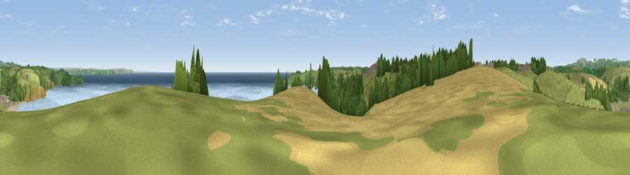

Viewpoint near Mevagissey
#4637 in England · top 9% of its area beats it · near MevagisseyThe view, rendered

A 360° render of this exact spot computed from the terrain model, tree cover and land cover — summer colours, afternoon light, calibrated against photographs of famous viewpoints. Real trees, hedges and buildings will differ in detail.
The panorama
Grey silhouette: terrain skyline in each direction (720 bearings, Earth curvature and refraction included). Dashed green: skyline with trees (+15 m) and buildings (+8 m) as obstacles. Blue strip: how far the ground is visible on each bearing.
Where the view opens
Wedge length = distance to the farthest visible ground on that bearing (vegetation-aware). Rings at 10, 25 and 50 km.
What fills the view
58% water · 24% grassland · 9% woodland · 7% cropland · 1% built-up ·
Angular shares of the visible panorama (visual magnitude), not map area. Landscape diversity 0.50 (0–1 Shannon).
Key numbers
More beautiful places nearby
The staircase of upgrades: each row has a higher view potential than everything closer. Driving times are estimates from straight-line distance, calibrated against real road routing — check an actual route before setting out.
| Place | Direction | Drive | Score |
|---|---|---|---|
| Viewpoint near Portmellon | S · 3 km | ~8 min | 73.0 |
| Viewpoint near Pentewan | NNE · 3 km | ~8 min | 74.7 |
| Viewpoint near Gorran Haven | S · 3 km | ~8 min | 77.0 |
| Viewpoint near St Austell | N · 8 km | ~16 min | 77.4 |
| Viewpoint near Trewoon | NNW · 8 km | ~17 min | 77.9 |
| Viewpoint near Trethurgy | N · 9 km | ~17 min | 79.8 |
| Viewpoint near Foxhole | NNW · 9 km | ~18 min | 84.3 |
| Viewpoint near Foxhole | NNW · 9 km | ~18 min | 86.4 |
50.27973, -4.78251 · source: screening · position refined by local search. Computed location — check access rights before visiting.